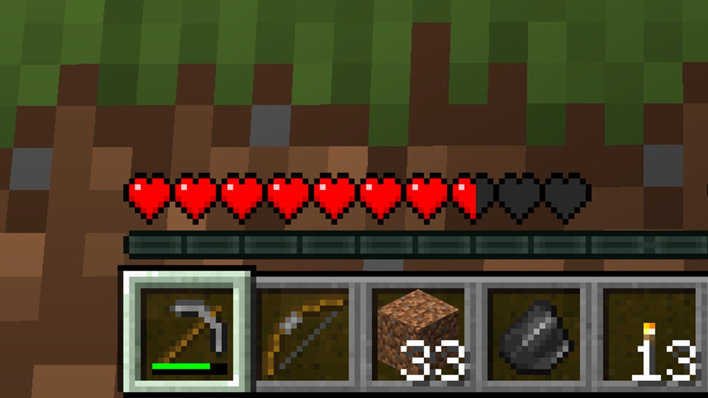
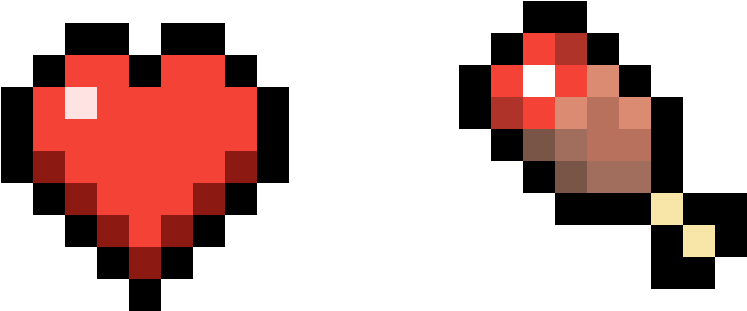

Player Health

The player's health is displayed as a row of hearts, each representing 2 health points. Players start with 10 hearts (20 health points). Health can be reduced by taking damage and can be restored using food, potions, and status effects.
- Full Health: 10 hearts or 20 health points (green hearts)
- Damage: Health is reduced when taking damage (e.g., from mobs, falls, or environmental hazards).
- Regeneration: Health regenerates when the hunger bar is full and can be accelerated with the Regeneration effect.
Mob Health

Health in mobs is displayed as hearts, similar to players. Different mobs have different healt amount. Here are examples of some mob health:
- Zombie: 10 health points (5 hearts)
- Skeleton: 20 health points (10 hearts)
- Enderman: 40 health points (20 hearts)
- Creeper: 20 health points (10 hearts)
Status Effects on Health

Several status effects can influence health, such as:
- Poison: Reduces health over time but never below 1 health point.
- Wither: Reduces health over time and can lower it below 1 health point.
- Regeneration: Restores health over time, useful for healing after battle.
- Hunger: Inflicts damage to the player overtime when the hunger bar is empty.
Healing and Damage

Healing and damage in Minecraft can be influenced by many factors:
- Food: Eating food restores health (e.g., bread restores 5 health points).
- Potions: Instant Health potions or Splash Potions of Healing restore health.
- Environmental Hazards: Falling damage, lava, drowning, and fire can deal significant damage.
Healing Tips
-
infoFood and HealingEating food restores health, with different foods restoring varying amounts of health points. Beef is the best food source you can take with you
-
infoPotions and HealingPotions of Healing or Splash Potions can quickly restore health, i recommend using these in a very desperate situation when you are low on health.
-
infoStatus EffectsDrinking milk will remove any status effects that you receieved or use Regeneration potions effects to heal over time after taking damage.